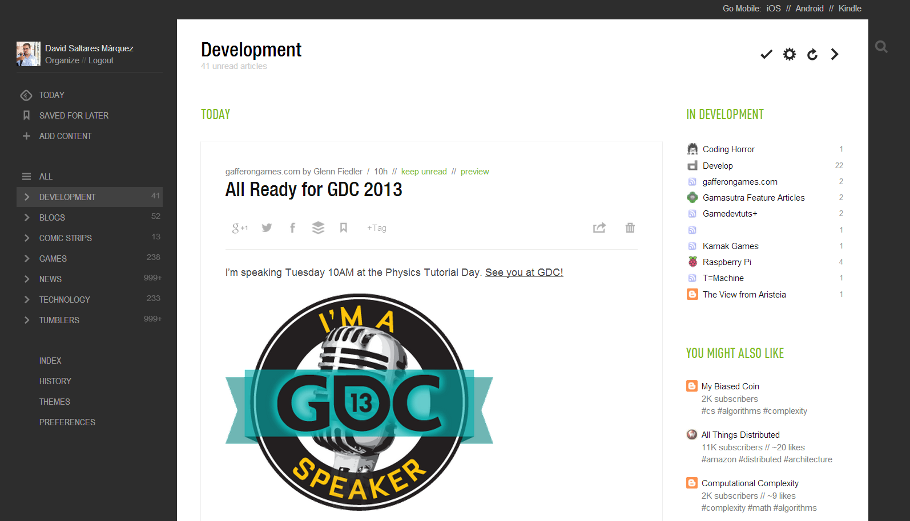
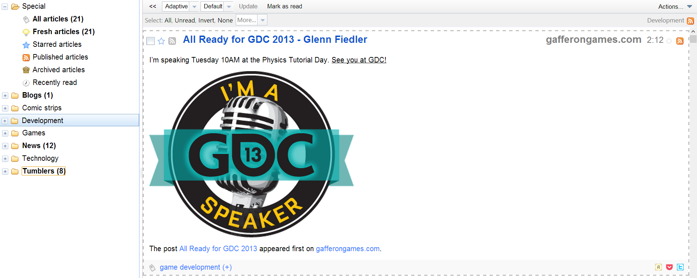
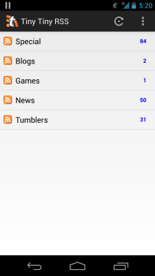

Apr 1, 2013 · 2 minute read · Comments
General

A few weeks ago I was contacted by an former professor at Kingston University asking whether I was interested in delivering a talk next on next Monday, April the 8th. An offer I gladly accepted.
Who would have thought, huh?
How come? You might ask. Well, just over a year and a half ago I arrived into Kingston, a little posh south west London borough, as an Erasmus student with the prospect of continuing my MSc in Computing Science. Leaving the crazy international student experience aside, which I got plenty of, the fact that Kingston offered a games course seemed highly appealing. Not to mention that the UK has the third biggest games industry in the world.
Coming from southern Spain, where the games industry is effectively non existent, this had life changing potential.
Oh boy, it really did!

Barely three months later, I got a job as a junior programmer at the Nottingham based Crytek studio. I didn’t start until February though, when the semester was over and the coursework was delivered. As some of you may already know, I"m currently part of the Homefront 2 AI team, which is utterly brilliant.
I cannot express how much I’ve learned during the little time I’ve been in the games industry working at a triple A studio. However, I"ll do my best next Monday. I"ll be talking about how is to be a programmer at Crytek like and how the hell I ended up where I am today. Something like a v2.0 of what I delivered in my home university last November. As you can imagine, going back to where these exciting times started is great and I"m looking forward to it.
Obviously, work on my side projects has been affected by the preparation for this talk. Activity on them shall promptly resume!
Mar 24, 2013 · 4 minute read · Comments
General
As all of you surely know, Google Reader is in death row and will be part of history as of June the 1st.
Booh!
Google Reader’s demise
As usual, the people from the Internet went bananas, so I took the time to film one of them.
Google is evil, they"re fucking us over and so on and so forth. However, the sad truth is, they just wanted to know what you"re interested in so they could provide you with more meaningful advertisement. That’s their business after all. You could argue that Reader didn’t have any of that, but Google is a massive collection of services that share a common knowledge base. Presumably, RSS had stopped being such a good way of getting to know what someone likes, social media does that now.
Besides, let’s face it, people who access the news the way we do are a tiny minority.
Looking for alternatives: Netvibes and Feedly
So it was time to look for alternatives, I wasn’t asking for much.
- Control of what I read: none of that, hey we"ll figure out what you like bullshit.
- Simple but usable UI: show me my categories and a way of quickly going through the items in a given category, marking them as read as we go along.
- Cross platform: good syncing back and forth between mobile and desktop.
- Offline reading: call me old school, but I"d like to access my stuff in the most remote of places.
- Kind with my data: after spending some time setting everything up and tidying my feeds, I"d like to be able to pack and take my stuff somewhere else. OPML does it well.
- Light weight: having a super fancy UI is pointless if the application makes your device crawl and cry for help.
Okay, maybe I was asking for too much, kill me.
During the past week there’s been an avalanche of “Alternatives to Google Reader” posts.
What the hell dude? This is one of them!
Fair enough, but the truth is, I’ve been following them and they tend to derive people to services like Netvibes or Feedly. Both have seen their user base increase dramatically, to the point of having availability problems. To be completely fair, there’s nothing deeply wrong with neither of them. Actually, I’ve used Feedly for a few days and it’s quite nice, I was even going to stick with it. However, all these were too heavy on the browser. I took a look at The Old Reader whose browser version is very nice but it lacks a phone one.

At the end of the day, all of them could shut the whole thing down any time putting me in the same uncomfortable position. First world problems.
I needed to take control.
Then I discovered Tiny Tiny RSS, a full blown free and open source RSS reader application that you can install in your own hosting. Check its website, you"ll see it pretty much has every feature you could ask for. It’s simple, multi language, multi user and comes with an open source (paid but inexpensive) Android app. It even has plugin and theme support.
Sweet!

Alright, I know not everyone has a hosting of his/her own, although, like I said earlier, people who still go for RSS feeds are a minority anyway, and they tend to be in the blogging world. I don’t believe the two sets to be mutually exclusive.
Install & config guide
The documentation is good enough but to make things even simpler, I’ve written these few simple steps down.
- Download the latest version
- Upload it to your server, use FTP, SCP or whatever you prefer.
- Create a database for tt-rss. It can be either MySQL or PostgreSQL.
- Install the SQL schema into your newly created database.
[tt-rss]/schema/ttrss_schema_mysql.sql
[tt-rss]/schema/trss_schema_pgsql.sql
- Copy
[tt-rss]/config.php-dist to [tt-rss]/config.php.
- Go through the file and set the options to match your server. These are the most common ones.
define('DB_TYPE', "mysql"); // or mysql
define('DB_HOST', "localhost");
define('DB_USER', "******");
define('DB_NAME', "******");
define('DB_PASS', "******");
define('SELF_URL_PATH', 'http://[yoursite]/tt-rss/');
define('SINGLE_USER_MODE', false);
- Add this to your server cron to schedule feeds updates with the frequency you prefer.
/usr/bin/wget --quiet --output-document=/dev/null "http://[your-tt-rss-url]/backend.php?op=globalUpdateFeeds&daemon=1"
- Login with
<admin>/` and immediately change your password you fool!
Enjoy!
The Android version has a trial build and connecting it with your Tiny Tiny RSS instance is dead easy. Type in your URL, username and password. Just make sure you have the external clients option enabled in your settings panel within the webapp.

It’s been a week since I set everything up and I couldn’t be happier. You can even enable plugins to share articles on various media, use your old Reader keyboard shortcuts or even add custom CSS to make it look a lot more like your sentenced RSS app.
Given the fact that I already had a hosting, switching to Tiny Tiny RSS was a no brainer and I love it.
Mar 16, 2013 · 3 minute read · Comments
General

Last weekend I went to Lincoln University to attend #CanJam13, a 24h game jam organized by some members of the Computing Society over there. They kindly asked some people from Crytek and Rockstar to do the judging and provide the students with some advice during the competition. Waking up early during the weekend is never ideal but hey, those students were about to pull an allnighter! It"d have been really inconsiderate not to show up.
I don’t regret it a single bit.

The atmosphere was highly inspirational: two games labs full of equipment, a projector with the hilarious #CanJam13 Twitter timeline and a countdown, pizza, loads of caffeine and extreme time management. People worked together in teams of up to four members to deliver something playable that fitted with the theme: Uranium + Madness. Overall, there were around 70 students up for the challenge. I was pleasantly surprised to see many first year students joining the jam using tools like Unity or Game Maker. C#/XNA and C++/SFML were popular choices as well. It struck me hard when I realised I only got to make text adventures and a lame Nintendo DS prototype during my first year as an undergrad student.
Getting things done from the very beginning, that’s the spirit.

After talking to the students I also got to have a chat with the organisers, who make a tremendous effort to pull these things off. #CanJam13 was their second edition but they also offer week long jams and all sorts of events. From where I stood, everything was flawless, so kudos! I can tell, from my experience with the Games Development Society we founded back at my home uni, that the time investment needed is huge. Oh, how I wish I had more sweet stuff like that back then.
I already knew Tom Feltwell“s face, a MSc student who works in the school of Computing Science. He came to Crytek UK some time ago to deliver a presentation about his awesome work on game metric analysis. I was also pleased to meet Olivier Szymanezyk, a PhD student who showed me his impressive crowd simulation. Up to 3K entities walking around an airport with their individual destinations and social groups.
At some point during Sunday morning, the countdown reached the feared zero mark and everyone had to have submitted. I got there just in time for have some food and a pint before the presentations. Obviously the games were simple and rough but don’t get me wrong! Delivering interesting games from a design standpoint in under 24h is brutal and there were many good ideas. The organisers told me they were going to send me the links, so I"ll post them as soon as I get them. In the meantime, check this video of one of the games and maybe dig into some of the interviews that were filmed.

Lately, I’ve talked about how important to get shit done is and how game jams can help you to achieve that goal. The students who joined the #CanJam13 were doing just that. Some of them are also taking part in One Game A Month, which is also brave, since they"ll need every time they can get for uni assignments and dissertations.
Hats off!
Undoubtedly, a great experience I"d like to repeat next year if possible.
Mar 9, 2013 · 7 minute read · Comments
Games development
This text proposes an effective approach to painlessly create static collidable geometry in 2D levels with the help of Box2D and the new libgdx maps API.
All the source code is available for direct download below the post.
New libgdx maps API
The mighty libgdx library saw itself to yet another addition a couple of weeks ago, a shiny brand new maps API. Nex and me had been working on it for a while and people seem to be quite happy with it. Actually, by now, loads of folks have contributed too, which is kind of the beauty of open source, isn’t it? You might as well read the wiki page and check out the sample code, luckily enough, there’s plenty which is not always the case.
It primarily focuses on modelling how maps data is represented as well as in providing a way of easily implementing loaders and renderers for specific formats. The API comes with built in loaders and renderers for the TMX, Tide and Gleed formats. However, the latter might be deprecated at some point in the future due its absolute paths horribleness. Believe me, I’ve tried to work my way around it but there is just no elegant solution. Although there hasn’t been any releases since it’s inclusion, it’s accessible in the nightly builds. For those interested in the implementation, please go to the Github repository.

Take this cutie as an example, a minimalistic platformer using the new API in just under 300 lines.

Enjoy.
Use your level editor to place world physics geometry
Let’s say you"re working on a 2D game which mechanics require some sort of collision detection. Most likely, you"ll be leveraging an editor such as Tiled or Gleed to boost your level creation process. How are you planning to implement collision detection in a way it doesn’t become an excruciating pain in the ass to maintain? Can we also make it efficient, please?
At last! After all, this is what the article is really about.
If you"re going for tile based levels, you could add properties to the map to determine tiles walkability, a perfectly valid approach when presented with just a bunch of tiles. However, adding or changing tiles can become tedious really soon. Why don’t you take advantage of Box2D collision detection algorithms and space partitioning techniques? No worries, you could do so regardless of the need of running a real time physics simulation, just create the bodies, move them according to the game logic and query the world for intersections without stepping it. In case of dealing with a physics based game, then, by all means, make full use of Box2D.

I"m going to assume basic knowledge of this popular physics library, if you don’t consider yourself minimally familiar with it, please take some time to get the basics.
Alright, your textures are all set in your level and it looks stunningly beautiful! Sadly, you lack any kind of collision data. A good practice is to create a separate layer named “physics” or similar for sanity reasons. Now you can start placing shapes (rectangles, circles, polygons or polylines) so they adjust to the non walkable areas. Here’s an example in my WIP casual abduction game.

As you could have guessed, having thousands of shapes won’t do your game’s performance any favours. It"d be a good idea to keep the shape count under control while preserving a decent granularity. Ideally, the editor would have a “generate physics” option that would automatically create collision data from a texture layer using contour tracing. Sadly, that’s not the case in the state of the art open source software we have today.
Don’t forget to hit “save”.
Create bodies from your level data > My level has collidable static geometry data, how do I get that in my game?
To tackle that problem I implemented a simple class named MapBodyManager with the following interface.
public class MapBodyManager {
public MapBodyManager(World world, int unitsPerPixel, String materialsFile);
public void createPhysics(Map map, String layerName);
public void destroyPhysics();
}
I believe it to be simple enough but I"ll explain the details just in case. The constructor takes the Box2D world so it knows where to dump the new bodies into and where to delete them from later on. Most level editors work in pixels, while Box2D measures stuff in metres (take that imperial system!), hence the need for the unitsPerPixel conversion rate. We"ll get to the materials stuff in just a minute.
Once your level is loaded, you just need to do this.
MapBodyManager mapBodyManager = new MapBodyManager(world, 1.0f, Gdx.files.internal("data/materials.json"));
Map map = assetManager.get("data/level.xml", Map.class);
mapBodyManager.createPhysics(map, "physics");
This will automatically create a static body per shape in your “physics” layer as shown in the screenshot below.

So the player heroically beats the level and makes it to the next one. You surely will want to get rid of all those bodies (reference to murder not intended) before adding any more. Interestingly enough, our handy MapBodyManager keeps track of all registered bodies, so voilá, easy as cake.
mapBodyManager.destroyPhysics();
Material system
Those who are no strangers to Box2D will know that body’s fixtures have properties that determine how they interact with other entities. These are mainly: density, restitution and friction. Mass is usually determined by the area of the shape involved and the fixture’s density. Again, check out Box2D documentation for more details on this. We could just create all our static bodies with default properties but…
I want to have icy, sandy and elastic surfaces in my game so characters can slide, be slower and bounce!
How can our MapBodyManager deal with all this? It’s actually dead easy, I went for a very simple material system where each one of these materials are defined by a set of properties in a straightforward JSON file. Let’s say that the game world we want to model has regular, ice and elastic elements, we might be able to get away with something such as this.
[
{ "name" : "ice", "density" : 1.0, "restitution" : 0.0, "friction" : 0.1 },
{ "name" : "elastic", "density" : 1.0, "restitution" : 0.8, "friction" : 0.8 }
]
Assigning materials to elements in our editor is also fairly simple. Add a “material” custom property per shape you want to behave in a non default manner. Every editor has its own GUI element for this and all of them are almost identical.

The MapBodyManager will automatically pick up each shape’s material and create bodies with the desired properties. Adding new materials is trivial and, whilst reassigning them is not comfortable, it’s not a deal breaker either.
This makes you happy, doesn’t it?
Yay! ### Source code
Did you read this all or did you just scrolled down after realising you could download the source at the end? If you belong to the first group, I have to say you"re awesome and deserve my most sincere admiration.
Nevertheless, you"ll be very disappointed to see there’s no arcane magic going on behind the scenes as the implementation is not shocking in any way. Here it goes for those who are bored enough and wouldn’t mind to procrastinate some more by reading a piece useless code.
As promised.
MapBodyManager.java
To be honest, I’ve only tested this with Gleed created maps and I don’t intend to maintain this utility class any further than what I deem necessary to carry on with my projects. The API is homogeneous and should be fully compatible with Tiled and Tide as it is. Worst case scenario, if you bump into problems, the fixes are likely to be simple. Obviously, you"re not forced to use it, feel free to mimic the approach and pick ideas from it, you"ll probably come up with something better after some thought.
- Edit 1: updated the code to support latest Libgdx API and fixed bugs.
- Edit 2: changed materials file format from XML to JSON.
Feb 26, 2013 · 2 minute read · Comments
Games development
It pleases me to say that this past week I’ve been able to keep it real and stick to my humble set of tasks:
Victory and defeat mechanic: the spaceship has a limited amount of energy which diminishes after each collision with the world geometry. Once it’s empty, the game enters the defeat state and restarts. If the player manages to abduct all the astronauts in the level, the game goes into the victory state. The whole entity creation – deletion cycle has allowed me to spot some bugs and flaws in the entity system design, which is good.
Placeholder HUD: I’ve used the simple and yet powerful libgdx scene 2D elements to compose a minimalistic HUD which shows remaining astronauts, spaceship energy and elapsed time. Relax, it won’t look this bad forever as the assets will be replaced by the final art in due time. I just wanted to get something functional.
Improved control and abduction system: this is where I’ve put most of the effort. Speed limits, collision restitution, impulses and so on have all been tweaked to make the spaceship control feel good. Luckily enough, I’ve made it a lot smoother and pleasant, which was paramount to make the game fun. However, beware! For abducting all the astronauts shall not be an easy task.
This week I"ll be working on:
- Refucktoring: some modules need a small cleanup.
- Animated toasts: adding some effects for victory, defeat, abduction and collision situations.
- Level system with locked/unlocked levels.